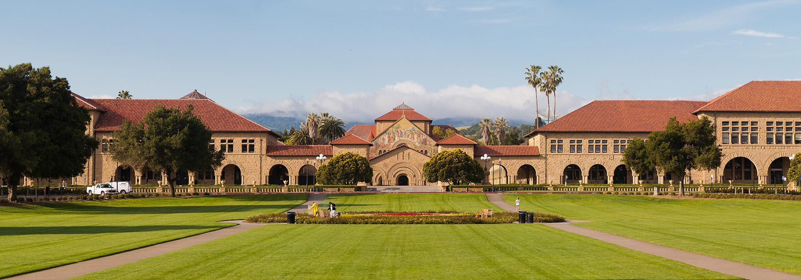

Anya von Diessl
B.S. in Mathematics & M.S. in Computer Science
About Me
I’m a Stanford-trained mathematician and computer scientist specializing in artificial intelligence.
My experience spans machine learning research, full-stack product development, and fintech, including building AI systems at Stanford and writing production code that is now used at Google.

B.S., Mathematics
Stanford University, CA
September 2021 – June 2025
M.S., Computer Science (Artificial Intelligence Track)
Stanford University, CA
September 2025 – June 2026
Experience
Mathematics Department Tutor & Grader at Stanford
Provided advanced instruction in theoretical and applied mathematics through Stanford’s Mathematics Department. Guided students through rigorous explorations of vector space theory, multivariable analysis, and differential systems, with specialized focus on spectral and matrix theory, eigenvalue and singular value decomposition (SVD), dimensionality reduction, proof construction, and the analysis of linear operators and dynamical systems. Graded coursework and examinations for four undergraduate mathematics courses, working closely with Stanford Mathematics Department professors.

Statistical Modeling & Inference Researcher at Stanford
Conducted research on latent-variable and probabilistic models for uncertainty quantification in high-dimensional, noisy datasets. Developed and implemented Bayesian inference frameworks and variational optimization algorithms to uncover hidden structure and mitigate estimation bias in predictive modeling. Leveraged stochastic process theory, information-theoretic measures, and causal inference techniques to enhance model identifiability, interpretability, and robustness in complex real-world systems.
Machine Learning Researcher at Stanford CS Department
Developed a contrastive deep learning model to identify regulatory differences in chromatin accessibility across normal, tumor, and metastatic states. By leveraging CNN architectures like ChromBPNet, applied advanced machine learning techniques to enhance the precision of sequence-to-function predictions, with a focus on refining computational models for disease progression, particularly in thyroid cancer.
Teaching Assistant, CS227b: General Game Playing at Stanford CS Department
Assisted in teaching a graduate-level AI course on the design of autonomous agents capable of strategic reasoning in novel environments. Guided students in applying methods from automated reasoning, symbolic knowledge representation, adversarial and heuristic search, resource-bounded planning, and algorithmic game theory to develop general-purpose intelligence systems that learn and execute strategies from formal game descriptions.
Computational Modeling Researcher at Stanford Translational AI Lab
Conducted interdisciplinary research uniting artificial intelligence, probabilistic modeling, and computational medicine. Developed and deployed deep learning architectures for computer vision and medical imaging, integrating probabilistic inference to quantify uncertainty and extract high-fidelity biomarkers. Leveraged Bayesian and data-driven modeling frameworks to improve diagnostic prediction, enhance model interpretability, and advance precision healthcare through statistically robust AI systems.
Google Ads SWE Intern at Google
Developed a high-performance, production-scale interface for a real-time fraud detection platform within Google Ads, leveraging TypeScript, HTML, and CSS to engineer modular, scalable, and latency-optimized components. Collaborated with cross-functional teams to translate complex fraud analytics pipelines and anomaly detection workflows into intuitive, data-rich visual systems, enhancing usability, reliability, and decision speed across a platform processing billions of ad transactions daily.
Ventures & Initiatives
2022 – 2024
Founder, Computer Science Education Company
Founded a computer science education and technical mentoring company after identifying an unmet demand for advanced software engineering and artificial intelligence instruction. Designed and delivered individualized training on modern programming frameworks, machine learning, and emerging technologies for students and industry professionals, including engineers from leading technology companies such as Google and Meta. Developed tailored curricula bridging theoretical computer science with practical software development, enabling clients to rapidly acquire and apply new technical skills.
2026 – Present
Founder, Stealth FinTech Startup
Founded a stealth fintech venture focused on applying artificial intelligence and modern software infrastructure to improve financial services and user decision-making. Led product strategy, technical architecture, and full-stack engineering, designing scalable backend systems, intelligent automation workflows, and secure data pipelines while driving rapid product development from concept through prototype. Collaborated with early users and industry stakeholders to validate product-market fit and refine the platform based on iterative customer feedback.
2025 – 2026
Co-Founder & CTO, AI Interview Platform
Co-founded an AI-powered interview platform that conducts adaptive voice and text interviews using customizable conversational agents, enabling organizations to tailor interviewer tone, communication style, and evaluation criteria to specific hiring workflows. Architected and developed the platform’s MVP, implementing real-time conversational AI, configurable prompting pipelines, automated interview summarization, and structured candidate analysis. Collaborated on investor fundraising and product strategy, presenting the company to leading venture capital firms, with the platform attracting interest from Y Combinator and multiple early-stage investors.
2025 – 2026
Technology & Entrepreneurship Fellow, Stanford University
Selected to participate in Professor Charles Eesley’s Technology and Entrepreneurship Seminar, an invitation-based program connecting high-potential founders with leading entrepreneurs and venture investors. Engaged in advanced discussions on venture creation, startup strategy, fundraising, and technology commercialization while receiving mentorship from experienced founders and investors. Built relationships within Stanford’s entrepreneurial ecosystem through regular interactions with venture capitalists, startup executives, and emerging technology founders.
Proficient across the full stack of modern AI research and engineering, from low-level systems programming to high-level deep learning frameworks and statistical modeling.
Technical Skills & Background
Hover & drag to explore
Featured Projects
A glimpse into the range of projects I’ve worked on.